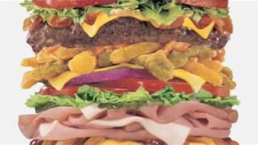

Video Clip
This is a fan made video clip from a game called Doom Eternal. While the game itself is quite gory and too explicit to show, this friendly itteration shows various foes in the game coming together to play music with the protagonist being shown in the backround holding open a mouth of an enemy.
Audio Clip
In this audio clip, you will hear a guy rapping about burgers. This audio clip was taken from bigwillystatus on Youtube on a video titled "Hamburger Cheeseburger Big Mac Whopper".